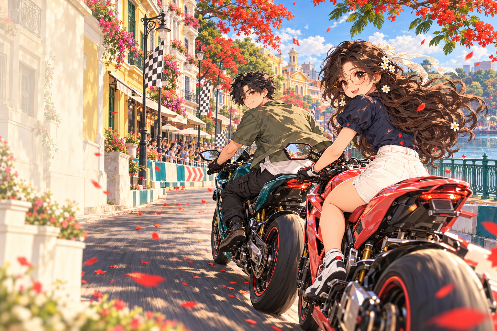
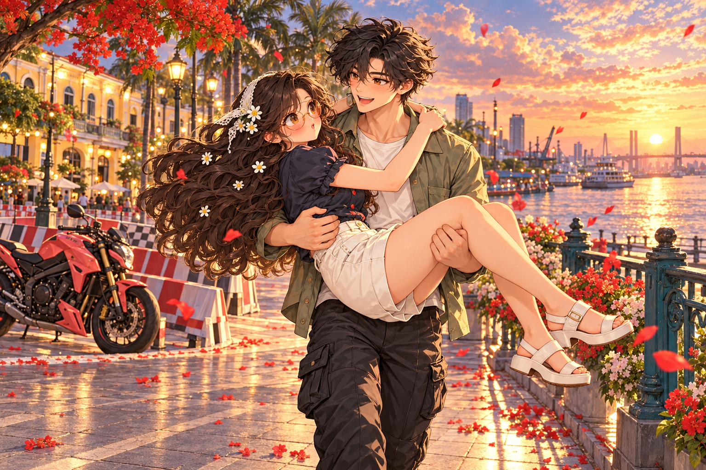

Tiếng ga hòa vào gió biển. Một cuộc đua qua những góc phố quen. Và một người đang chờ bạn.
Thắng chặng hiện tại để mở chương tiếp theo. Mỗi góc phố là một phần câu chuyện.

Cuộc đua đã tạm dừng. Thả lỏng tay lái rồi mình đi tiếp.
Mưa làm giảm độ bám. Sương rút ngắn tầm nhìn; biển báo và rào chắn vẫn chỉ rõ tuyến đua.
Đi qua các checkpoint theo thứ tự. Nhìn biển mũi tên và minimap trước giao lộ. Nếu lạc hoặc mắc kẹt, dùng cứu hộ để trở về checkpoint gần nhất với một khoản phạt thời gian.
Cọc tiêu chỉ làm bạn chậm lại. Va chạm mạnh có thể khiến Lucien chạy tới giúp; mỗi ba lần cứu hộ thật có một cảnh hôn má. Xem thử không tăng bộ đếm hay cấp huy chương.
Tay cầm: cần trái để lái · RT/A ga · LT/B phanh. Trên điện thoại, chơi ngang để có nhiều khoảng nhìn hơn. Các bản đồ là đường đua khép kín, không phải chế độ khám phá tự do.